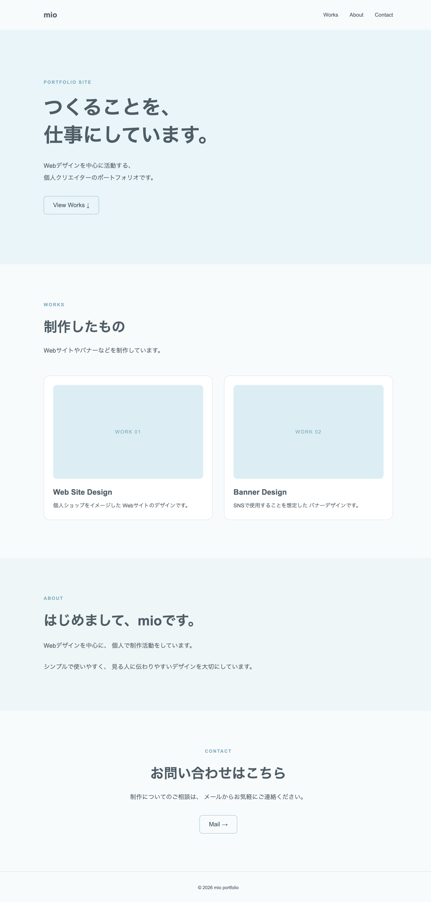

WEB
初心者向け｜CSSで
Webサイトをデザインする方法
HTMLでWebページの内容を作ったら、
次はCSSを使ってサイトのデザインを整えていきます。
この記事では、その1で作成したポートフォリオサイトにCSSを追加して、
文字の大きさや色、余白、レイアウトを調整しながら、
Webサイトのデザインを完成させていきます。
この記事でできること
- CSSでWebサイトのデザインを整える
- HeaderやHeroのレイアウトを作る
- Worksをカード形式で表示する
- AboutやContactのデザインを整える
- スマートフォンでも見やすいサイトにする
この記事で作るWebサイト
今回は、HTMLとCSSを使って、
シンプルな1ページのポートフォリオサイトを作ります。
制作した作品を紹介する「Works」、
自分について紹介する「About」、
連絡先を掲載する「Contact」を用意して、
個人で活動する人が自分の作品や活動をまとめられるサイトにしていきます。

今回作成するポートフォリオサイト
サイトの構成は、次のようになります。
今回作るポートフォリオサイト
TOP
↓
WORKS
↓
ABOUT
↓
CONTACT
最初に作品を掲載するWorksを配置することで、
サイトを訪れた人に「何を作っている人なのか」を伝え、
そのあとにAboutで制作者について知ってもらえる構成にしています。
初めてサイトを訪れた人は、
まだ自分自身について詳しく知っているとは限りません。
そこで最初に作品や実績を見せることで、
「何を作っている人なのか」「どんな活動をしているのか」を
すぐに伝えやすくなります。
作品や活動に興味を持ってもらえたら、
そのあとにプロフィールを見てもらうことで、
制作者自身についても知ってもらうことができます。
ただし、最適な順番はポートフォリオの目的によって変わります。
自分自身の経歴や専門性が重要な仕事であれば、
プロフィールを早い段階に置く方法もあります。
「サイトを訪れた人に、まず何を知ってほしいか」を考えて
順番を決めるのがおすすめです。
作品数や情報量が増えてきたら、
WorksやProfileなどを別ページに分けても構いません。
まずは今ある情報をわかりやすく見せることを優先して、
必要になったときにページを増やしていきましょう。
CSSを書く前に
この記事では、「その1：HTML編」で作成したポートフォリオサイトに
CSSを追加して、デザインを整えていきます。
まだHTMLを作成していない場合は、
先に「その1：HTML編」を参考に
HTMLを完成させてください。
HTML編で作成した「sample-portfolio」フォルダをVS Codeで開き、
「style.css」を編集していきます。
1. CSSでWebサイトをデザインする
HTMLでページの内容ができたら、
次は「style.css」を使ってWebサイトの見た目を整えていきます。
CSSでは、文字の大きさや色、余白、背景、
レイアウトなどを設定することができます。
VS Codeで「style.css」を開いて、
まずはページ全体の基本設定を書いてみましょう。
* {
box-sizing: border-box;
}
html {
scroll-behavior: smooth;
}
body {
margin: 0;
font-family: Arial, sans-serif;
color: #4f5d66;
background: #f8fbfc;
}
a {
color: inherit;
}
「body」では、ページ全体の文字色や背景色、
使用するフォントなどを設定しています。
また「margin: 0;」を指定することで、
ブラウザに最初から設定されているページ外側の余白をなくしています。
「box-sizing: border-box;」は、
要素の幅や高さを扱いやすくするための設定です。
今回はすべての要素に適用しています。
「scroll-behavior: smooth;」を設定すると、
HeaderのWorksやAboutなどをクリックしたときに、
ページ内をなめらかに移動できるようになります。
Headerを整える
次に、ページ上部のHeaderを整えます。
「style.css」に次のコードを追加してください。
.header {
display: flex;
justify-content: space-between;
align-items: center;
padding: 28px 10%;
}
.logo {
font-size: 20px;
font-weight: bold;
text-decoration: none;
}
.nav {
display: flex;
gap: 30px;
}
.nav a {
font-size: 14px;
text-decoration: none;
}
「display: flex;」を使うと、
要素を横並びに配置することができます。
Headerでは「justify-content: space-between;」を使って、
左側にサイト名、右側にナビゲーションが配置されるようにしています。
「gap」では、Works・About・Contactの間隔を調整しています。
Heroを整える
次に、ページを開いたときに最初に表示される
Heroのデザインを整えます。
「style.css」に次のコードを追加してください。
.hero {
min-height: 620px;
display: flex;
flex-direction: column;
justify-content: center;
padding: 80px 10%;
background: #eaf5f9;
}
.hero-label,
.section-label {
margin: 0 0 24px;
font-size: 12px;
font-weight: bold;
letter-spacing: .16em;
color: #82aebe;
}
.hero h1 {
margin: 0;
font-size: 52px;
line-height: 1.4;
}
.hero-text {
margin: 28px 0 0;
font-size: 16px;
line-height: 2;
}
.button {
width: fit-content;
display: inline-block;
margin-top: 32px;
padding: 14px 24px;
border: 1px solid #9bc2d0;
border-radius: 8px;
text-decoration: none;
transition: .2s;
}
.button:hover {
background: #d9edf4;
}
Heroには「min-height」を設定して高さを確保し、
「display: flex;」と「justify-content: center;」を使って
内容が縦方向の中央付近に配置されるようにしています。
「padding」ではHeroの内側に余白を作り、
「background」では背景色を設定しています。
見出しには文字サイズや行間を設定し、
「button」ではリンクに余白や枠線を付けることで
ボタンのようなデザインにしています。
また「:hover」を使うと、
マウスカーソルをボタンに重ねたときのデザインを変更できます。
今回は背景色が少し濃くなるようにしています。
SectionとWorksを整える
次に、WorksやAbout、Contactで共通して使用する
Sectionの余白や見出しを整えます。
「style.css」に次のコードを追加してください。
.section {
padding: 100px 10%;
}
.section h2 {
margin: 0;
font-size: 36px;
}
.section-text {
margin: 20px 0 0;
line-height: 2;
}
「section」には上下左右の余白を設定し、
各エリアの内容が詰まりすぎないようにしています。
続いて、Worksにある2つの作品を
カードとして並べて表示します。
.works-grid {
display: grid;
grid-template-columns: repeat(2, 1fr);
gap: 30px;
margin-top: 50px;
}
.work-card {
padding: 24px;
border: 1px solid #d7e4e9;
border-radius: 16px;
background: #ffffff;
}
.work-image {
aspect-ratio: 16 / 10;
display: flex;
align-items: center;
justify-content: center;
border-radius: 10px;
background: #dceef4;
color: #82aebe;
font-size: 13px;
letter-spacing: .12em;
}
.work-card h3 {
margin: 24px 0 12px;
font-size: 20px;
}
.work-card p {
margin: 0;
font-size: 14px;
line-height: 1.8;
}
「display: grid;」を使うと、
複数の要素を行や列に並べることができます。
今回は「grid-template-columns: repeat(2, 1fr);」を指定して、
2つの作品カードが同じ幅で横に並ぶようにしています。
「gap」では、カード同士の間隔を設定しています。
「work-image」は、今回は作品画像の代わりになるエリアです。
「aspect-ratio」を使って横と縦の比率を指定しています。
About・Contact・Footerを整える
最後に、About、Contact、Footerのデザインを整えます。
「style.css」に次のコードを追加してください。
.about {
background: #eef6f8;
}
.about-text {
max-width: 650px;
margin: 24px 0 0;
line-height: 2;
}
.contact {
text-align: center;
}
.contact .section-label {
text-align: center;
}
.contact .button {
margin-top: 32px;
}
.footer {
padding: 35px 10%;
text-align: center;
border-top: 1px solid #d7e4e9;
}
.footer p {
margin: 0;
font-size: 12px;
}
Aboutでは背景色を変更して、
Worksとの区切りがわかりやすくなるようにしています。
「max-width」を設定すると文章が横に広がりすぎないため、
画面が大きい場合でも読みやすい幅に保つことができます。
Contactでは「text-align: center;」を使って、
見出しや文章を中央に配置しています。
Footerはページの一番下に細い線を入れ、
著作権表記が中央に表示されるシンプルなデザインにしています。
HTMLだけの状態と比べると、
文字の大きさや色、余白、背景、カードの配置などが整い、
Webサイトらしいデザインになりました。
このように、HTMLでページの内容や構造を作り、
CSSでその見た目を整えることでWebサイトを作ることができます。
2. スマートフォンでも見やすくする
PC版のデザインができたら、
次はスマートフォンでも見やすくなるように調整します。
今回作ったサイトは、現在のCSSだけでも
画面幅に合わせてある程度レイアウトが変化します。
ただし、スマートフォンのような小さな画面では、
文字サイズや余白、作品カードの並びなどを調整すると、
さらに見やすくなります。
メディアクエリを追加する
CSSでは「メディアクエリ」を使うことで、
画面の幅に応じて別のデザインを適用することができます。
「style.css」の一番下に、次のコードを追加してください。
@media (max-width: 700px) {
.header {
padding: 22px 7%;
}
.nav {
gap: 18px;
}
.nav a {
font-size: 12px;
}
.hero {
min-height: 520px;
padding: 70px 7%;
}
.hero h1 {
font-size: 38px;
}
.hero-text br {
display: none;
}
.section {
padding: 80px 7%;
}
.section h2 {
font-size: 30px;
}
.works-grid {
grid-template-columns: 1fr;
gap: 24px;
}
.work-card {
padding: 20px;
}
}
「@media (max-width: 700px)」の中に書いたCSSは、
画面幅が700px以下になったときに適用されます。
今回は、Heroの見出しを少し小さくしたり、
ページ左右の余白を調整したりしています。
また、PCでは横に2つ並べていたWorksのカードを
「grid-template-columns: 1fr;」に変更することで、
スマートフォンでは1列に表示されるようにしています。
3. ブラウザで最終確認する
HTMLとCSSが完成したら、
最後にブラウザでサイト全体を確認しましょう。
見た目だけでなく、リンクやボタンが正しく動くか、
パソコンとスマートフォンの両方で問題なく表示されるかも確認します。
最後に確認したいこと
- 文字や画像が画面からはみ出していない
- Works・About・Contactへのリンクが正しく動く
- Mailボタンからメールを作成できる
- 作品カードが正しく表示されている
- パソコンとスマートフォンの両方で見やすく表示される
気になるところがあれば、
VS CodeでHTMLやCSSを編集して、もう一度ブラウザで確認します。
「編集する → 保存する → ブラウザで確認する」を繰り返しながら、
サイトを整えていきましょう。
4. 完成したWebサイトを公開するには？
ここまでで、HTML編で作成したWebサイトにCSSを追加し、
ポートフォリオサイトのデザインが完成しました。
現在は自分のパソコンの中にあるため、
URLを使ってほかの人に見てもらうには、
Web上にサイトを公開する必要があります。
HTMLとCSSで作ったサイトを公開する方法はいくつかありますが、
GitHubにサイトのファイルを保存し、
Netlifyと連携して無料で公開する方法もあります。
GitHubやNetlifyを使った公開方法については、
別の記事で詳しく紹介する予定です。
まとめ
今回は、その1で作成したHTMLにCSSを追加して、
ポートフォリオサイトのデザインを整えました。
CSSを使うことで、文字の大きさや色、余白、背景、
レイアウトなどを自由に調整することができます。
また、メディアクエリを使えば、
パソコンだけでなくスマートフォンでも
見やすいWebサイトにすることができます。
最初からすべてのCSSを覚える必要はありません。
実際にコードを書いて表示を確認しながら、
色や余白などを少しずつ変更してみてください。
自分で作るのが難しいときは
ポートフォリオサイトは自分で作ることもできますが、
HTMLやCSSを一から書いたり、デザインやページ構成を考えたりするには
ある程度の時間が必要です。
「自分のサイトはほしいけれど、どこから作ればいいかわからない」
「デザインを一から考えるのが難しい」という場合は、
ポートフォリオ用のテンプレートを使う方法もあります。
テンプレートを使えば、あらかじめ用意されたページをもとに、
プロフィールや作品、文章、画像などを自分の内容に変更しながら
サイトを作ることができます。
テンプレートを使って、自分のサイトを作る
shizuki-studioでは、
HTMLとCSSで作られたポートフォリオサイトのテンプレートを
用意しています。
ファイルの編集方法からWeb上に公開するまでの手順をまとめた
説明書も付属しているため、
初めて自分のWebサイトを作る方にも使っていただけます。
自分の活動をまとめる場所がほしいと思ったら、
まずは小さなサイトから作ってみてください。
作品や活動と一緒に少しずつ更新していけば、
自分らしいポートフォリオサイトに育てていくことができます。